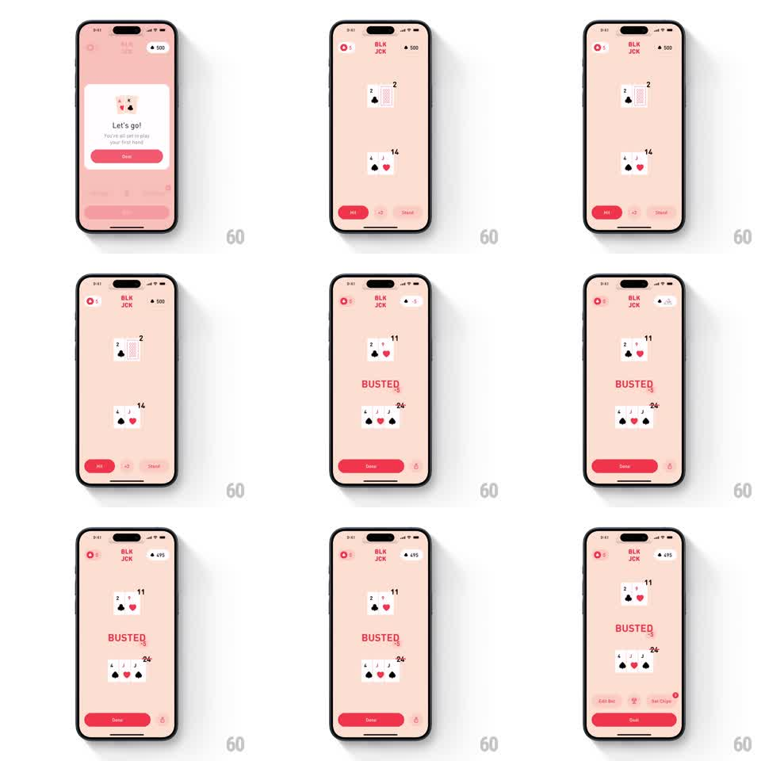

Media
Frame-by-frame

Rebuild this animation 1:1: BLKJCK's bust sequence - the busting card flips in, the total ticks past 21, and "BUSTED" stamps across the table with a wiggle as the chip count drains.

Rebuild this animation 1:1: BLKJCK's bust sequence - the busting card flips in, the total ticks past 21, and "BUSTED" stamps across the table with a wiggle as the chip count drains. ## Integration Integration: stack-agnostic spec - springs given as stiffness/damping, timed motions as duration + curve; map every value to your framework and animation library of choice. ## Scene Pink blackjack table: chip balance and logo header, dealer's cards up top, the player's hand with its total below, action buttons at the bottom. ## Motion spec Pattern: bust reveal sequence, ~1.5s. - The final card slides into the hand and flips face-up (300ms: slide in on ease-out, half-flip at settle). - The hand total ticks upward rapidly to its bust value (~400ms, ease-out), turning red as it crosses 21. - "BUSTED" stamps in at center (scale 1.5 to 1, spring stiffness 350 damping 13) and wiggles (+-3deg, two cycles of 180ms) while the action buttons collapse into a single Done button (250ms layout spring). - The header chip counter ticks down by the bet in sync with the stamp. - Done slides the verdict out (200ms) and resets the table. ## Calibration - The stamp lands exactly when the total lands - the number finishing is the trigger beat. - The wiggle is small and horizontal-rotational; no translation shake. ## Reduced motion Card fades in, total sets, BUSTED fades in without stamp. ## Don't miss - The dealer's cards also finish revealing in the background of the stamp - the table completes its state even though the hand is dead. - The bet deduction and the BUSTED stamp are the same beat; a delayed drain reads as a separate penalty.